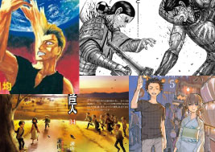
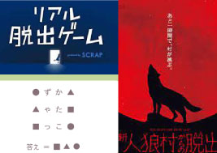
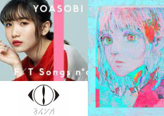
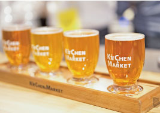

ABOUT
井上 真由弥
Date of Birth : 1977.07.22 (48才) 蟹座
Blood type : AB型
使用可能ソフト
言語 : HTML5、CSS3、Java
FW/ライブラリ : Spring Boot, MyBatis, Lombok, Thymeleaf, jQuery
開発環境・ツール : Eclipse, VSCode, Dreamweaver
デザイン : Photoshop, Illustrator
ビジネスツール : Excel, Word, PowerPoint
好きなもの
BTS
テテが推しです。
GAME
時々気分転換にしてます。

COMIC
感動して泣いたりします。

謎解き
リアル脱出ゲーム等で遊んでいます。

MUSIC
米津さんとか色々聞きます。

BEER
お酒好きです。強くはないです。